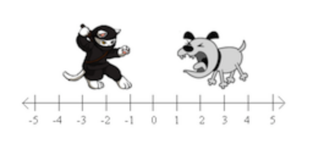
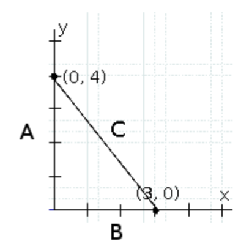
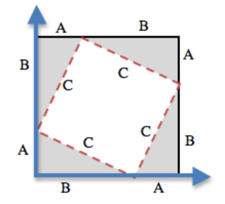

Adding Collisions
Students use the distance formula and their data structures to determine when two or more characters in their games have collided. They extend their update handlers to generate a new structure that represents the game after a collision has occurred.
|
Product Outcomes |
|
|
Materials |
|
{kind=link}
{kind=link}
helper function-
a small function that handles a specific part of another computation, and gets called from other functions
hypotenuse-
the side opposite the 90-degree angle in a right triangle
| The Distance Formula | 30 minutes |
Overview
Students implement the distance formula, to prepare for collision detection in their games.
Launch
So far, none of the animations we’ve created included any distance or collision-detection functions. However, if you want to make a game where the player has to hit a target, avoid an enemy, jump onto platforms, or reach a specific part of the screen, we’ll need to account for collisions.

{kind=link}
-
In the image above, how far apart are the cat and dog?
-
If the cat was moved one space to the right, how far apart would they be?
-
What if the cat and dog switched positions?
Finding the distance in one dimesion is pretty easy: if the characters are on the same number line, we subtract the smaller coordinate from the larger one, and we have our distance.
When the cat and dog were switched, did you still subtract the dog’s position from the cat’s, or subtract the cat’s position from the dog’s? Why?
Unfortunately, most distances aren’t only measured in one dimension. We’ll need some code to calculate the distance between two points in two dimensions.

{kind=link}
Investigate
-
How could you find the distance between the two points shown in this image?
-
How could you find the length of the C, also called the Hypotenuse?
Let’s start with what we do know: if we treat the x- and y-intercepts of C as lines A and B, we have a right triangle.
What is the line-length of A? Would it be different if the triangle pointed downward, and intercepted the point (0, −4)?
Ancient civilizations had the same problem: they also struggled to find the distance between points in two dimensions. Let’s work through a way to think about this problem: what expression computes the length of the hypotenuse of a right triangle?

{kind=link}
For any right triangle, it is possible to draw a picture where the hypotenuse is used for all four sides of a square. In the diagram shown here, the white square is surrounded by four gray, identical right-triangles, each with sides A and B. The square itself has four identical sides of length C, which are the hypotenuses for the triangles. If the area of a square is expressed by side ∗ side, then the area of the white space is C^2.
By moving the gray triangles, it is possible to create two rectangles that fit inside the original square. While the space taken up by the triangles has shifted, it hasn’t gotten any bigger or smaller. Likewise, the white space has been broken into two smaller squares, but in total it remains the same size. By using the side-lengths A and B, one can calculate the area of the two squares.
What is the area of the smaller square? The larger square?
image
The smaller square has an area of A^2, and the larger square has an area of B^2. Since these squares are just the original square broken up into two pieces, we know that the sum of these areas must be equal to the area of the original square:
A^2 + B^2 = C^2
Does the same equation work for any values of A and B?
To get C by itself, we take the square-root of the sum of the areas:
√( A^2 + B^2 ) = C
Pythagoras proved that you can get the square of the hypotenuse by adding the squares of the other two sides. In your games, you’re going to use the horizontal and vertical distance between two characters as the two sides of your triangle, and use the Pythagorean theorem to find the length of that third side.
Remind students that A and B are the horizontal and vertical lengths, which are calculated by line-length.
-
Turn to Distance - you’ll see the formula written out.
-
Draw out the circle of evaluation, starting with the simplest expression you can see first.
-
Once you have the circle of evaluation, translate it into Pyret code at the bottom of the page, starting with
check: distance(4, 2, 0, 5) is... end
Now you’ve got code that tells you the distance between the points (4, 2) and (0, 5). But we want to have it work for any two points. It would be great if we had a function that would just take the x’s and y’s as input, and do the math for us.
-
Turn Word Problem: distance, and read the problem statement and function header carefully.
-
Use the Design Recipe to write your distance function. Feel free to use the work from the previous page as your first example, and then come up with a new one of your own.
-
When finished, type your
distancefunctions into your game, and see what happens. -
Does anything happen when things run into each other?
You still need a function to check whether or not two things are colliding.
Watch Out! Pay careful attention to the order in which the coordinates are given to the distance function. The player’s x-coordinate (px) must be given first, followed by the player’s y (py), character’s x (cx), and character’s y (cy). Just like with making data structures, order matters, and the distance function will not work otherwise. Also be sure to check that students are using num-sqr and num-sqrt in the correct places. |
| Collision Detection | 30 minutes |
Overview
Students implement a simple Boolean-producing function, which composes with the distance function they implemented.
Launch
So what do we want to do with this distance?
How close should your danger and your player be, before they hit each other?
At the top Word Problem: is-collision you’ll find the Word Problem for is-collision.
-
Fill in the Contract, two examples, and then write the code. Remember: you WILL need to make use of the
distancefunction you just wrote! -
When you’re done, type it into your game, underneath
distance.
Now that you have a function which will check whether two things are colliding, you can use it in your game! For extra practice, You can also implement collision detection in this Ninja Cat Starter File. This is the program we’ll be altering for this lesson. In Ninja Cat, when the cat collides with the dog, we want to put the dog offscreen so that it can come back to attack again.
Investigate
Out of the major functions in the game (next-state-tick, draw-state, or next-state-key), which do you think you’ll need to edit to handle collisions, changing the GameState when two characters collide?
We’ll need to make some more if branches for next-state-tick.
-
Start with the test: how could you check whether the cat and dog are colliding? Have you written a function to check that?
-
What do the inputs need to be?
-
How do you get the
playeryout of theGameState?playerx? -
How do you get the
dangerxout of theGameState?dangery?
if is-collision(
g.playerx,
g.playery,
g.dangerx,
g.dangery): ...result...Remember that next-state-tick produces a GameState, so what function should come first in our result?
if is-collision(
g.playerx,
g.playery,
g.dangerx,
g.dangery):
game(
...playerx...,
...playery...,
...dangerx...,
...dangery...,
...dangerspeed...
...targetx...
...targety...
...targetspeed...)And what should happen when the cat and dog collide? Can you think of a number that puts the dog off the screen on the left side? What about the dog’s y-coordinate? We could choose a number and always place it at the same y-coordinate each time, but then the game would be really easy! To make it more challenging, we’d like the dog to appear at a random y-coordinate each time it collides with the cat. Thankfully, Pyret has a function which produces a random number between zero and its input:
# num-random :: Number ‑> Number
if is-collision(
g.playerx,
g.playery,
g.dangerx,
g.dangery):
game(
g.playerx,
200,
num-random(480),
0,
0,
g.targetx,
g.targety,
g.targetspeed)Collision detection must be part of the next-state-tick function because the game should be checking for a collision each time the GameState is updated, on every tick. Students may assume that draw-state should handle collision detection, but point out that the Range of draw-state is an Image, and their function must return a new GameState in order to set the locations of the characters after a collision.
Once you’ve finished, write another branch to check whether the player and the target have collided. Challenges:
-
Change your first condition so that the danger gets reset only when the player and danger collide AND the cat is jumping. (What must be true about the player’s y-coordinate for it to be jumping?)
-
Add another condition to check whether the player has collided with the danger while the player is on the ground. This could be a single expression within
next-state-tick, or you can write a helper function calledgame-overto do this work, and use it in other functions as well (maybe the GameState is drawn differently once the game is over.)
These materials were developed partly through support of the National Science Foundation,
(awards 1042210, 1535276, 1648684, and 1738598).  Bootstrap by the Bootstrap Community is licensed under a Creative Commons 4.0 Unported License. This license does not grant permission to run training or professional development. Offering training or professional development with materials substantially derived from Bootstrap must be approved in writing by a Bootstrap Director. Permissions beyond the scope of this license, such as to run training, may be available by contacting contact@BootstrapWorld.org.
Bootstrap by the Bootstrap Community is licensed under a Creative Commons 4.0 Unported License. This license does not grant permission to run training or professional development. Offering training or professional development with materials substantially derived from Bootstrap must be approved in writing by a Bootstrap Director. Permissions beyond the scope of this license, such as to run training, may be available by contacting contact@BootstrapWorld.org.